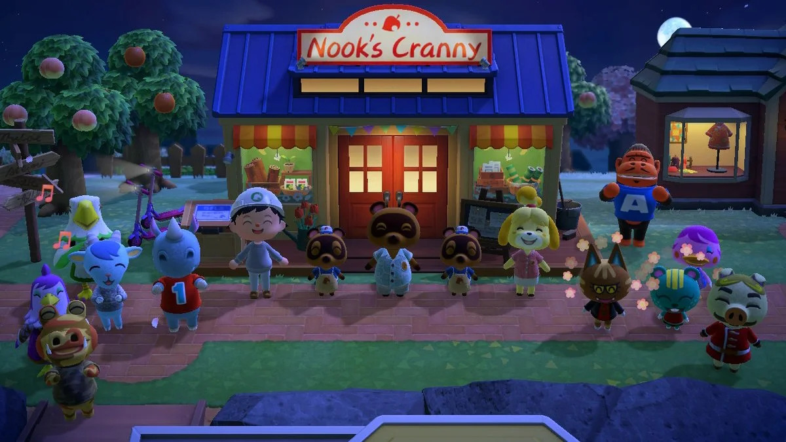

New Leaf
The next Animal Crossing game is Animal Crossing: New Leaf. It was released for the 3DS in 2012. Unlike previous iterations where you were a citizen, you are now the mayor of your new town. This release introduced town ordinances, as well as public work projects. You as the player will not only work on developing your town, but also making it a better place to live with the help of Isabelle. You also don't start off in a house initally, and instead start off in a tent that you will upgrade to a house. In 2016, it was re-released as Animal Crossing New Leaf: Welcome Amiibo, introducing the Amiibo feature to the game.
New Horizons
The most recent release for this franchise is Animal Crossing: New Horizons, released in 2020 for the Nintendo Switch. This game marked a huge step forward in character customization, since darker skin is no longer acquired by tanning (which often took a very long time) but instead from the initial character customization. This iteration of Animal Crossing also introduced crafting. You acquire materials by wood from trees, stones from rocks, etc. You can now craft furniture and tools this way, although you can still buy those things in the shops too. Since this game was released at the start of the COVID-19 pandemic, people often used this game as a substitute for friend gatherings and special events. In 2021, a DLC was released called Animal Crossing New Horizons: Happy Home Paradise.
| Original Game Release Year | 2001 |
| Wild World Release Year | 2005 |
| City Folk Release Year | 2008 |
| New Leaf Release Year | 2012 |
| New Horizons Release Year | 2020 |